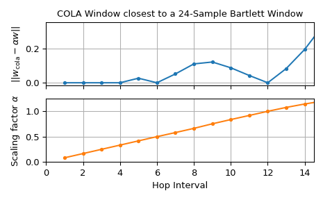

closest_STFT_dual_window#
- scipy.signal.closest_STFT_dual_window(win, hop, desired_dual=None, *, scaled=True)[source]#
Calculate the STFT dual window of a given window closest to a desired dual window.
For a given short-time Fourier transform window win incremented by hop samples, the dual window is calculated, which minimizes
abs(dual_win - desired_dual)**2when scaled isFalse. For scaled set toTrue,abs(alpha*dual_win - desired_dual)**2is minimized with alpha being the optimal scaling factor. AValueErroris raised if no valid dual window can be determined.- Parameters:
- winnp.ndarray
The window must be a real- or complex-valued 1d array.
- hopint
The increment in samples by which the window is shifted in each step.
- desired_dualnp.ndarray | None
The desired dual window must be a 1d array of the same length as win. If set to
None(default), then desired_dual is assumed to be the rectangular window, i.e.,np.ones_like(win).- scaledbool
If set (default), the closest scaled version instead of closest dual window is calculated.
- Returns:
- dual_winnp.ndarray
A dual window of
alpha*win(with hop interval hop), which is closest to desired_dual. Note that the dual window of win is dual_win/alpha and that the dual window of dual_win is alpha*win. dual_win has the same shape as win and desired_win.- alphafloat | complex
Scale factor for win. It is always one if scaled is set to
False.
See also
ShortTimeFFTShort-time Fourier transform which is able to utilize a dual window for calculating the inverse.
ShortTimeFFT.from_win_equals_dualCreate instance where the window and its dual are equal.
Notes
For a given window and hop interval, all possible dual windows are expressed by the hop linear conditions of Eq. (24) in the Short-Time Fourier Transform section of the SciPy User Guide. Hence, decreasing hop, increases the number of degrees of freedom of the set of all possible dual windows, improving the ability to better approximate a desired_dual.
This function can also be used to determine windows which fulfill the so-called “Constant OverLap Add” (COLA) condition [1]. It states that summing all touching window values at any given sample position results in the same constant \(\alpha\). Eq. (24) shows that this is equal to having a rectangular dual window, i.e., the dual being
alpha*np.ones(m).Some examples of windows that satisfy COLA (taken from [2]):
Rectangular window at overlap of 0, 1/2, 2/3, 3/4, …
Bartlett window at overlap of 1/2, 3/4, 5/6, …
Hann window at 1/2, 2/3, 3/4, …
Any Blackman family window at 2/3 overlap
Any window with
hop=1
References
[1]Julius O. Smith III, “Spectral Audio Signal Processing”, online book, 2011, https://www.dsprelated.com/freebooks/sasp/
[2]G. Heinzel, A. Ruediger and R. Schilling, “Spectrum and spectral density estimation by the Discrete Fourier transform (DFT), including a comprehensive list of window functions and some new at-top windows”, 2002, http://hdl.handle.net/11858/00-001M-0000-0013-557A-5
Examples
Let’s show that a Bartlett window with 75% overlap fulfills the COLA condition:
>>> import matplotlib.pyplot as plt >>> import numpy as np >>> from scipy.signal import closest_STFT_dual_window, windows ... >>> m = 24 >>> win, w_rect = windows.bartlett(m, sym=False), np.ones(m) >>> d_win, alpha = closest_STFT_dual_window(win, m//4, w_rect, scaled=True) >>> print(f"COLA: {np.allclose(d_win, w_rect*alpha)}, {alpha = :g}") COLA: True, alpha = 0.5
We can also determine for which hop intervals the COLA condition is fulfilled:
>>> hops, deviations, alphas = np.arange(1, 16, dtype=int), [], [] >>> for h_ in hops: ... w_cola, alpha = closest_STFT_dual_window(w_rect, h_, win, scaled=True) ... deviations.append(np.linalg.norm(w_cola - win*alpha)) ... alphas.append(alpha) ... >>> fg0, (ax0, ax1) = plt.subplots(2, 1, sharex='all', tight_layout=True) >>> ax0.set_title(f"COLA Window closest to a {m}-Sample Bartlett Window") >>> ax0.set(ylabel=r"$||w_\text{cola}-\alpha w||$", xlim=(0, hops[-1]-.5)) >>> ax1.set(xlabel="Hop Interval", ylabel=r"Scaling factor $\alpha$", ... ylim=(0, 1.25)) >>> ax0.plot(hops, deviations, 'C0.-') >>> ax1.plot(hops, alphas, 'C1.-') >>> for ax_ in (ax0, ax1): ... ax_.grid() >>> plt.show()

The lower plot shows the calculated scaling factor \(\alpha\) for different hops whereas the upper displays the \(L^2\)-norm of the difference between the scaled Bartlett window and the calculated window. Since for hops 1 to 4 as well as for 6 and 12 the \(L^2\)-norm of the difference is practically zero, the COLA condition is fulfilled for those.